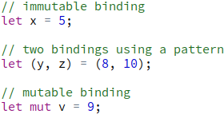
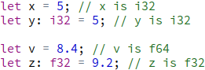
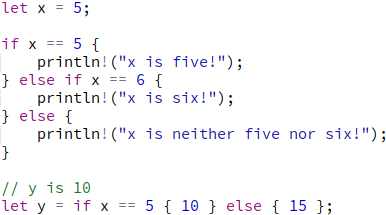
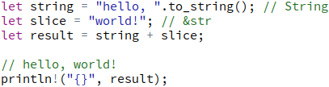
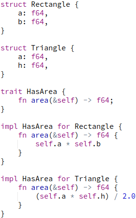
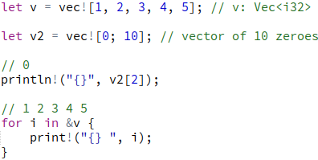

Język
Wiązania zmiennych i mutability
Rust nie korzysta ze zmiennych w takim samym znaczeniu jak np. język C. Zamiast tego istnieją tzw. wiązania zmiennych (variable bindings) które działają bardzo podobnie, ale jednak nie identycznie. Wiązanie "wiąże" konkretną wartość z nazwą. Aby je stworzyć, używamy "let". Różnią się one np. tym, że po lewej stronie let statement znajduje się pattern, a nie po prostu nazwa zmiennej. Domyślnie wiązania zmiennych są immutable, czyli nie mogą być zmienione. Możemy zadeklarować że wartość danego wiązania będzie zmieniana używając "mut".
Adnotacje typów
Rust jest statycznie typowanym językiem, czyli typy wszystkich zmiennych muszą być znane w czasie kompilacji i nie mogą się zmienić podczas działania programu. Do tego kompilator korzysta z "type inference". Oznacza to że w wielu przypadkach nie jesteśmy zmuszeni do ręcznego wypisywania typu danej zmiennej, Rust może go sam wybrać na podstawie wartości jaką przypisujemy.
Instrukcje warunkowe
Instrukcje warunkowe nie różnią się zbytnio od tych znanych z innych języków programowania, jednak bardziej przypominają te z Pythona niż z C. Możemy użyć samego if, możemy dodać else, oraz jeżeli istnieje taka potrzeba - else if. W przeciwieństwie do C, if zawsze wymaga użycia klamer. Co więcej, if może zostać wykorzystane także podczas przypisywania wartości do wiązania zmiennej.
Pętle
Do wykorzystania mamy 3 rodzaje pętli. Loop - nieskończona pętla (przerywana używając break), while - pętla iterująca tak długo jak warunek jest prawdziwy, oraz for - pętla iterująca przez np. zbiór liczb, tablicę lub vector.
Pattern matching
W przypadku kiedy mamy dużo możliwości, zamiast używać wielu if/else Rust oferuje nam pattern matching. Pozwala to dopasować wartość do jednej z wielu możliwości, tzw. ramion.
Strings
Rust wykorzystuje dwa rodzaje zmiennych tekstowych. Pierwsza to &str, czyli string slice ma stałą długość i nie może być zmieniony, tak samo jak string literals w C. Jest to wskaźnik do ciągu bajtów zakodowanych w UTF-8. Drugi rodzaj to "klasa" String, alokowana na heap, może zmieniać swój rozmiar w trakcie działania programu. Dostępna jest wygodna konwersja &str -> String używając metody to_string(). W przeciwieństwie do C, strings w Rust nie mogą być indexowane jako tablica char.
Traits
Trait pozwala nam zaznaczyć jaką funkcjonalność dany typ musi oferować. Przykładowo, struktury reprezentujące prostokąt i trójkąt muszą pozwalać na obliczenie ich pola. Trait definiujemy jako zestaw funkcji które następnie implementujemy osobno dla każdego z typów.
Vectors
Vector jest bardzo podobny do tego znanego z C++. Alokowany na heap, może dynamicznie zmieniać swój rozmiar oraz przechowywać elementy dowolnego (jednego) typu. Możemy go także indexować tak jak tablicę. Język oferuje makro vec![] do wygodnego tworzenia vectorów. Makro vec! posiada także drugą formę do tworzenia vectora o określonej liczbie takich samych elementów. Możemy wygodnie iterować przez vector za pomocą pętli for.
